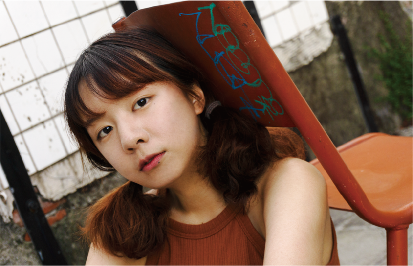
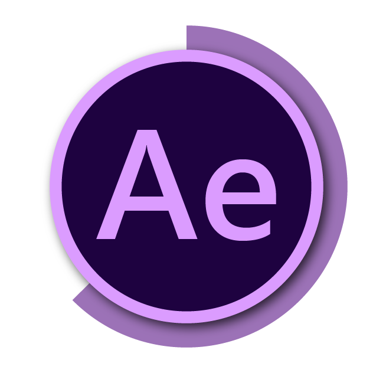
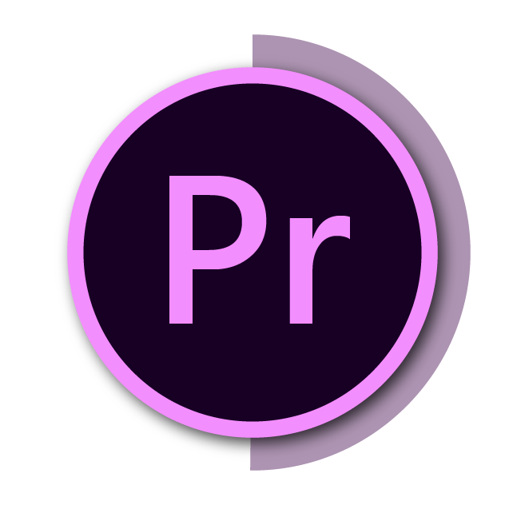
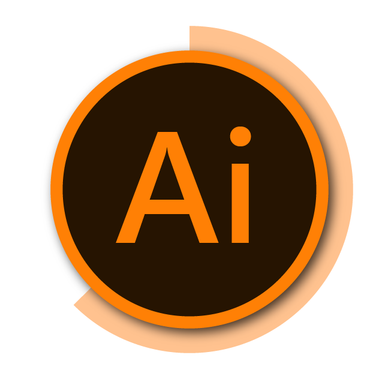
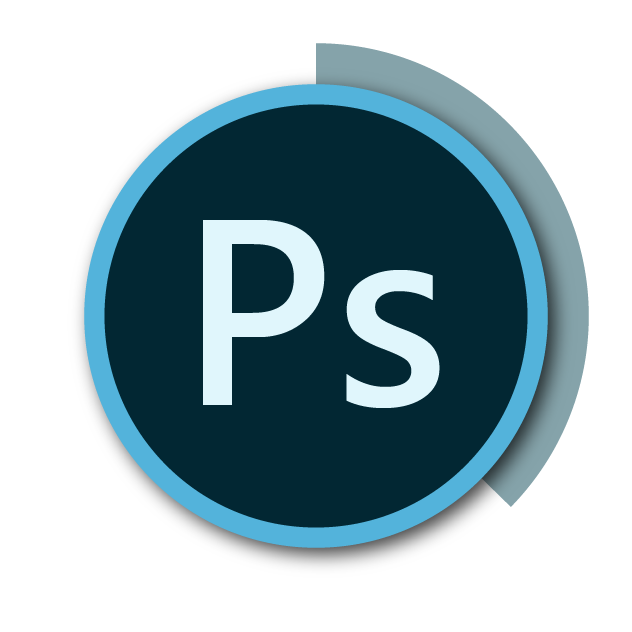
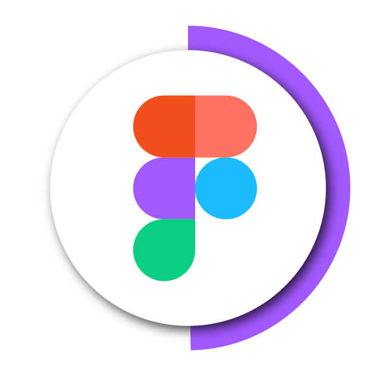
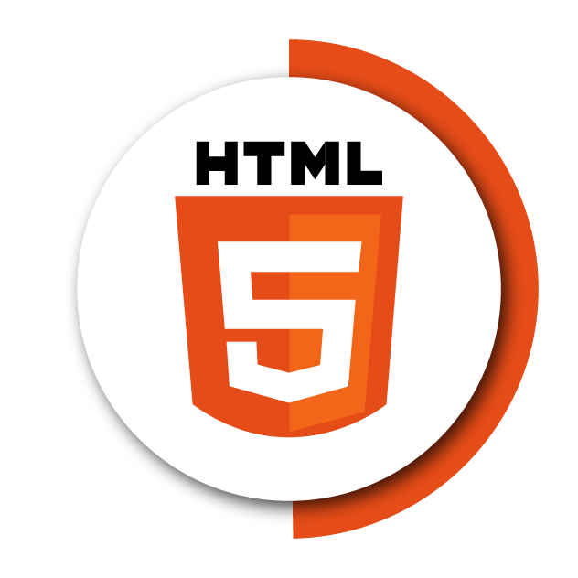
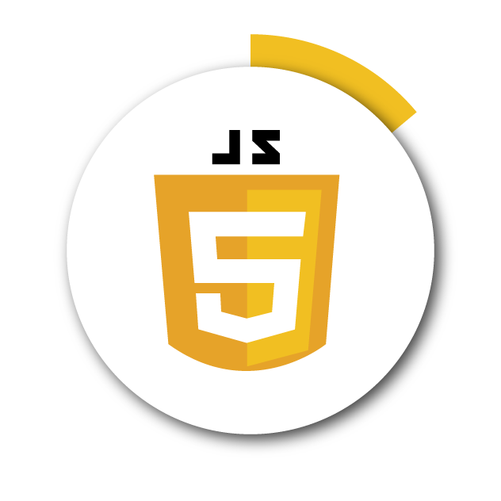

UXIAO
目錄
作品集
履歷
座伴｜介紹影片
座伴是一款結合物聯網科技，從關懷出發的坐墊，我們希望藉由紀錄銀髮族的久坐情形，通知家人增進家庭溫度，也建立醫療和社區的資料庫。
了解更多
互動教戰守則
系所介紹動畫
升上大學，來到這裡，我是誰我在哪裡？首先你需要閱讀互動教戰守則，讓學長姐帶你一步步開箱科系，深入了解不同類型的設計系。
桃園模聯CIS
位居台北前三名的國賓影城，在網路上的評價卻好壞參半，使用官方App後發現非會員的限制、以及介面上的不便...
了解更多
星座系列插畫
配合粉專每週發文主題–星座留遊學，設計構圖和腳色，以AI繪製插畫。
了解更多
插畫社群帳號
插畫和短篇漫畫是我空閒時間的興趣，透過經營社群帳號練習不同的畫材和構圖，以及穩定繪圖風格。
了解更多
人像攝影｜修圖
風景和人物的拍攝練習。
了解更多

國賓長春App
UIUX設計
位居台北前三名的國賓影城，在網路上的評價卻好壞參半，使用官方App後發現非會員的限制、以及介面上的不便...
了解更多
個人作品集
UIUX設計｜切版
以網頁的形式來呈現，從繪製網頁架構、wireframe到視覺和切版進行設計創作...
BEER BAR
UI設計｜RWD
模擬啤酒大全的入口網站，從LOGO、視覺、配色和網頁內容的選擇進行設計創作...
了解更多
Shan工作室
UI設計
模擬設計工作室的製作需求，從背景和TA的需求分析來設計網頁風格和架構...
了解更多
動態作品
  
在設定好風格後，擬定架構、手繪分鏡，制定拍攝或動畫製作進度。
靜態作品

平面設計｜插畫｜攝影
利用關鍵字鎖定創作方向，在理性的系統中，加入感性的理念和個人風格。
UIUX
 

分析專案背景，使用使用者旅程地圖、痛點分析、人物誌等工具為客戶提出設計風格、理念、改善使用者經驗等等。
top